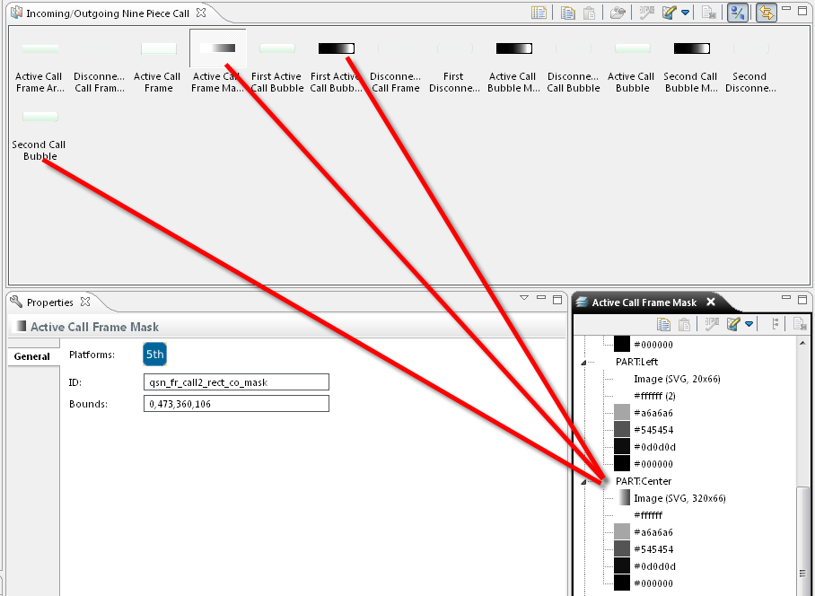
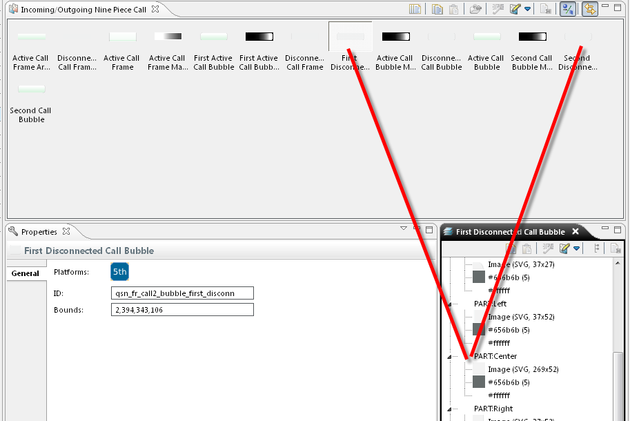

Nine Piece Call Handling
Windows
Nine piece element are divided into:
- Top Left
- Top
- Top Right
- Left
- Center
- Right
- Bottom Left
- Bottom
- Bottom Right
The following two groups of elements (Active Call Bubble, First Active
Call Bubble, Second Call Bubble) and (First Disconnected Call Bubble,
Disconnected Second Call Bubble) use specific parts together in each
group. The Top, Top Right, Left, Center, Right, Bottom Left, Bottom
parts are common for all element in the group. So, if you edit the
Center part of the Active Call Bubble, it is also applies to
the
First Active Call Bubble and Second Call Bubble.
Only the Top Left and Bottom Right are independent for each element.

Figure:
Group of elements in
nine piece
elements

Figure:
Group of elements in
nine piece
elements 2